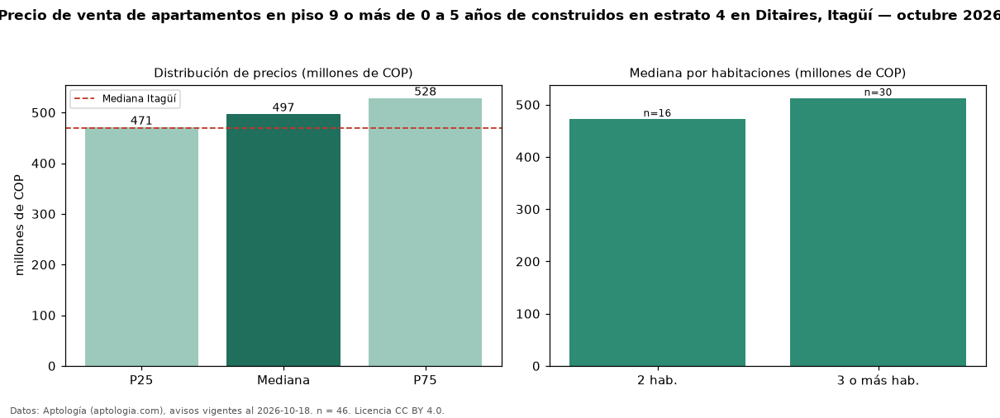

Precio de venta de apartamentos en piso 9 o más de 0 a 5 años de construidos en estrato 4 en Ditaires, Itagüí — octubre 2026
COP 497 millones es el precio mediano de apartamentos en piso 9 o más de 0 a 5 años de construidos en estrato 4 en venta en Ditaires, Itagüí (n = 46 avisos). Eso es 4 % más que la mediana de los apartamentos en piso 9 o más en estrato 4 en venta de Ditaires (COP 480 millones, n = 65); este segmento reúne el 71 % de esos avisos. Por metro cuadrado, la mediana es COP 7,34 millones/m² (n = 46), 2 % por encima de los apartamentos en piso 9 o más en estrato 4 en venta de Ditaires (COP 7,21 millones/m²). El área mediana anunciada es 68 m². El segmento con más oferta es el de 3 o más habitaciones (30 avisos, mediana COP 512 millones); pasar de 2 habitaciones a 3 o más habitaciones cambia la mediana +8 %. La administración mediana declarada es COP 358.000 al mes (n = 32). La mediana de todos los apartamentos en venta de Itagüí es COP 470 millones (+6 % de diferencia). 93 % de los avisos con el dato declara parqueadero. Datos: Aptología (aptologia.com), CC BY 4.0 — https://www.aptologia.com/venta/itagui/ditaires. Archivos: PDF, CSV con las cifras y gráfica PNG.

| Avisos únicos | 46 |
|---|---|
| Percentil 25 | COP 471.000.000 |
| Mediana | COP 497.000.000 |
| Percentil 75 | COP 528.400.000 |
| Mediana por m² | COP 7.341.485 |
Fuente: avisos vigentes de portales inmobiliarios recopilados por Aptología, deduplicados (mínimo 30 avisos únicos por celda). Precios pedidos, no cerrados. Fecha: 2026-10-18.